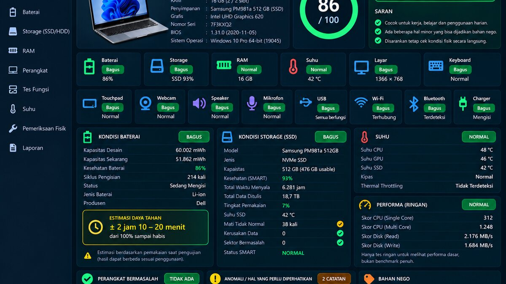
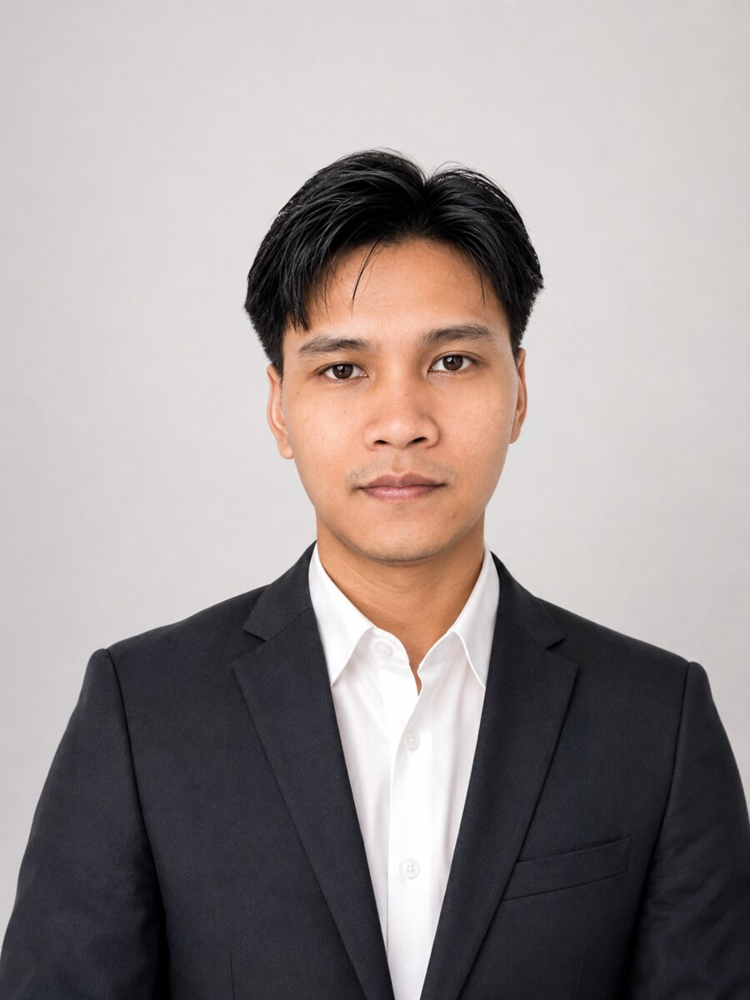

Windows diagnosticsSEDANG DIBANGUN
PC Second Inspector V3.1
Toolkit portabel untuk membantu pemeriksaan laptop bekas sebelum transaksi.
Profesional IT dan Customer Support dengan pengalaman 5 tahun dalam troubleshooting, jaringan, dukungan pengguna, dokumentasi, dan layanan berbasis SLA.
Berkembang ke IT Infrastructure · Automation · Channel Sales

5+ YEARS EXPERIENCESaya berfokus pada titik temu antara dukungan teknis, pengalaman pengguna, infrastruktur IT, dan kebutuhan bisnis.
Setiap proyek diberi status yang jelas. Klik “Lihat Detail” untuk membaca masalah, solusi, dan kontribusi saya.

Toolkit portabel untuk membantu pemeriksaan laptop bekas sebelum transaksi.
Asisten terminal Fedora untuk diagnosis sistem dan bantuan operasional yang mengutamakan keamanan.
Alur lead event berbasis QR, Google Sheets, dan WhatsApp dengan persetujuan pelanggan.
Katalog web responsif yang menghubungkan pengelolaan produk dan alur pemesanan WhatsApp.
Troubleshooting perangkat dan OS, konfigurasi jaringan, dukungan Tier 1–3, ticketing, SLA, eskalasi, backup, dan dokumentasi teknis.
Database/HRIS dan administrasi dokumen lebih dari 150 karyawan.
Administrasi pembayaran dan pelayanan informasi program.
Saya terbuka untuk IT Support, Technical Support, Customer Support, Channel Sales, IT Infrastructure, dan Technology Solutions.